Pour commencer, on est en droit de se demander ce qu'est une fonction du second degré. Eh bien, lorsque l'on travaille dans \(\mathbb R\), il s'agit d'une fonction définie par
$$
\begin{array}{l c c c l}
f & : & \mathbb R & \longrightarrow & \mathbb R \\
& & x & \longmapsto & a x^2 + bx + c,
\end{array}
$$
où \(a,b,c \in \mathbb R\) et \(a \neq 0\). On peut également l'écrire sous la forme $$f(x) = ax^2 + bx + c.$$
Ces expressions sont fort jolies me direz-vous, mais à quoi cela peut - il bien ressembler d'un point de vue graphique ? Une fonction du second degré est en fait ce que l'on appelle une parabole; et, comme le montre les deux graphes suivants, les branches d'une parabole peuvent aussi bien se diriger vers le haut que vers le bas. Cela dépendra du signe de \(a\). Mais pas de précipitation, on y reviendra un peu plus tard.
Ainsi, une équation du second degré est une équation du type
$$ f(x) \,\, = \,\, 0 \,\, \Leftrightarrow \,\, a x^2 + bx + c \,\, = \,\, 0. $$
Les solutions d'une telle équation sont appellées racines de la fonction \(f\). Graphiquement, les racines d'une fonction seront les points d'intersection de son graphe avec l'axe des abscisses \(x\).
Très bien, maintenant qu'on en sait un peu plus, comment peut - on déterminer les racines d'une fonction du second degré ? C'est là que la résolution d'équation du second degré entre dans la danse.
Résolution d'équation du second degré
expand_more
Un peu de cours...
On se propose ici de montrer la marche à suivre afin de déterminer les racines d'une fonction du second degré \(f\) donnée. Les racines de la fonction \(f\) seront données par les solutions de l'équation
$$f(x) \,\, = \,\, 0.$$
Soit \(f\) la fonction du second degré définie sur \(\mathbb R \) par
$$ f(x) \,= \, ax^2 + bx + c, $$
où \(a,b,c \in \mathbb R\) et \(a \neq 0\).
La première étape est de calculer le réel \(\Delta\), que l'on appellera le discriminant de la fonction \(f\), et qui sera donné par
$$ \Delta \,\, = \,\, b^2 - 4ac. $$
Une fois le discriminant \(\Delta\) calculé, on doit distinguer trois cas selon le signe de \(\Delta\).
\(\, \Delta \, > \, 0 \,\) Lorsque le discriminant \(\Delta\) est positif, la fonction \(f\) admet deux racines réelles, que l'on notera \(x_1\) et \(x_2\), données par
\(\, \Delta \, = \, 0 \,\) Lorsque le discriminant \(\Delta\) est nul, la fonction \(f\) admet une unique racine réelle, que l'on notera \(x_0\), donnée par
$$ x_0 \, = \, -\frac{b}{2a}. $$
\(\, \Delta \, < \, 0 \,\) Lorsque le discriminant \(\Delta\) est négatif, la fonction \(f\) n'admet aucune racine réelle.
Dans ce qui précéde, on a énoncé de manière très directe quelles étaient les racines d'une fonction du second degré, sans vraiment préciser comment est-ce qu'il est possible de les obtenir. Vous pouvez directement passer aux exemples, mais pour les curieux qui souhaiteraient savoir comment il est possible de s'y prendre pour déterminer ces expressions, on va maintenant donner quelques détails supplémentaires.
Pour y voir plus claire, mais également pour pouvoir comprendre comment obtenir les racines d'un polynôme du second degré, on va donner un détail de calcul permettant de les dériver. Commençons par le commencement en considérant la fonction du second degré \(f\) définie sur \(\mathbb R \) par
$$ f(x) \,= \, ax^2 + bx + c, $$
où \(a,b,c \in \mathbb R\) et \(a \neq 0\). Comme énoncé plus haut, trouver les racines d'un polynôme revient à résoudre l'équation
Sur la même lancée, on va ajouter \((b/(2a))^2\) à chacun des deux membres de l'équation, pour enfin avoir
$$ x^2 + \frac{bx}{a} + \left( \frac{b}{2a} \right)^2 \,\, = \,\,-\frac{c}{a} + \left( \frac{b}{2a} \right)^2. $$
Prenons un temps pour observer ce que nous venons d'obtenir. Y a - t - il quelque chose qui vous saute aux yeux ? Eh bien, vous remarquerez que le membre de gauche de l'expression précédente est une identité remarquable du type
$$ (a+b)^2 \,\, = \,\, a^2 + 2ab + b^2. $$
Il vient effectivement que
Posons maintenant \(\Delta \, = \, b^2 - 4ac\), qui notons - le, se trouve être notre fameux discriminant. Pour récapituler, et faire le point sur ce que l'on a pu obtenir, on est tout bonnement passer de
$$ x^2 + \frac{bx}{a} + \left( \frac{b}{2a} \right)^2 \,\, = \,\,-\frac{c}{a} + \left( \frac{b}{2a} \right)^2, $$
à la simplification
$$ \left( x + \frac{b}{2a} \right)^2 \,\, = \,\, \frac{\Delta}{4a^2}. $$
Il ne nous reste qu'à faire une résolution « basique » d'équation. Il vient en effet que
$$
\begin{array}{l l}
& \displaystyle{ \left( x + \frac{b}{2a} \right)^2 \,\, = \,\, \frac{\Delta}{4a^2} } \\[5pt]
\Leftrightarrow & \displaystyle{ \sqrt{\left( x + \frac{b}{2a} \right)^2} \,\, = \,\, \sqrt{\frac{\Delta}{4a^2}} } \\[5pt]
\Leftrightarrow & \displaystyle{ x + \frac{b}{2a} \,\, = \,\, \pm \frac{\sqrt{\Delta}}{\sqrt{4a^2}} } \\[5pt]
\Leftrightarrow & \displaystyle{ x + \frac{b}{2a} \,\, = \,\, \pm \frac{\sqrt{\Delta}}{2a} } \\[5pt]
\Leftrightarrow & \displaystyle{ x + \frac{b}{2a} - \frac{b}{2a} \,\, = \,\, - \frac{b}{2a} \pm \frac{\sqrt{\Delta}}{2a} } \\[5pt]
\Leftrightarrow & \displaystyle{ x \,\, = \,\, \frac{- b \pm\sqrt{\Delta}}{2a}. }
\end{array}
$$
On peut finalement distinguées deux cas. Supposons que \(\Delta\) soit strictement positif, les solutions possibles sont par conséquent données par
Si l'on suppose maintenant que \(\Delta\) est égal à zéro, on a une unique solution possible
$$ x_0 \,\, = \,\, \frac{- b \pm\sqrt{0}}{2a} \,\, = \,\, - \frac{b}{2a} $$
Pour finir, il est bon de noter que si \(\Delta\) est négatif, la fonction \(f\) n'admet aucune solution réelle puisque sur \(\mathbb R\), il n'est pas possible de calculer la racine carrée d'un nombre négatif.
Et voilà ! On a finit. On vient de dériver les racines d'une fonction du second degré. Plutôt cool, non ?
Quelques exemples...
Et maintenant, faisons place à quelques exemples ! Afin d'illustrer la petite partie théorique ci-dessus, on va montrer une résolution d'équation du second degré selon le signe du discriminant \(\Delta\).
Lorsque \(\Delta \) est positif
Considérons la fonction \(f\) définie sur \(\mathbb R\) par
$$ f(x) \,\, = \,\, 6x^2-4x-2, $$
et on souhaite déterminer les racines de la fonction \(f\). On va donc devoir, dans un premier temps, résoudre l'équation du second degré suivante
$$ a \,\, = \,\, 6 \hspace{25pt} b \,\, = \,\, -4 \hspace{25pt} c \,\, = \,\, -2.$$
$$
\begin{array}{l}
a \,\, = \,\, 6 \\ b \,\, = \,\, -4 \\ c \,\, = \,\, -2.
\end{array}
$$
Maintenant, on va calculer le discriminant \(\Delta\) de la fonction \(f\)
$$
\begin{array}{l l l}
\Delta & = & b^2 - 4ac \\[5pt]
& = & (-4)^2-4\times 6 \times (-2) \\[5pt]
& = & 16 - (-48) \\[5pt]
& = & 16 + 48 \,\, = \,\, 64.
\end{array}
$$
On sait alors que \(\Delta \, = \, 64 \,> \, 0\), et il vient que la fonction \(f\) admet deux racines réelles, que l'on notera \(x_1\) et \(x_2\)
Dans cette situation la fonction \(f\) coupe deux fois l'axe des abscisses: une fois en \(x_1 = 1\), et une seconde fois en \(x_2 = -1/3\). Graphiquement, les racines de la fonction \(f\) seront placées comme suit.
Lorsque \(\Delta \) est nul
Considérons la fonction \(f\) définie sur \(\mathbb R\) par
$$ f(x) \,\, = \,\, 4x^2+28x+49, $$
et on souhaite déterminer les racines de la fonction \(f\). On va donc devoir, dans un premier temps, résoudre l'équation du second degré suivante
$$ a \,\, = \,\, 4 \hspace{25pt} b \,\, = \,\, 28 \hspace{25pt} c \,\, = \,\, 49.$$
$$
\begin{array}{l}
a \,\, = \,\, 4 \\ b \,\, = \,\, 28 \\ c \,\, = \,\, 49.
\end{array}
$$
Maintenant, on va calculer le discriminant \(\Delta\) de la fonction \(f\)
$$
\begin{array}{l l l}
\Delta & = & b^2 - 4ac \\[5pt]
& = & 28^2-4\times 4 \times 49 \\[5pt]
& = & 784 - 784\,\, =\,\, 0.
\end{array}
$$
On sait alors que \(\Delta \, = \, 0\), et il vient que la fonction \(f\) admet une unique racine réelle, que l'on notera \(x_0\)
Pour conclure, l'unique racine réelle de la fonction \(f\) est donnée par
$$ x_0 \,\, = \,\, -\frac{7}{2}.$$
Dans cette situation la fonction \(f\) ne coupe qu'une seule fois l'axe des abscisses en \(x_0 = - 3.5\). Graphiquement, l'unique racine de la fonction \(f\) sera placée comme suit.
Lorsque \(\Delta \) est négatif
Considérons la fonction \(f\) définie sur \(\mathbb R\) par
$$ f(x) \,\, = \,\, 8x^2-11x+5, $$
et on souhaite déterminer les racines de la fonction \(f\). On va donc devoir, dans un premier temps, résoudre l'équation du second degré suivante
$$ a \,\, = \,\, 8 \hspace{25pt} b \,\, = \,\, -11 \hspace{25pt} c \,\, = \,\, 5.$$
$$
\begin{array}{l}
a \,\, = \,\, 8 \\ b \,\, = \,\, -11 \\ c \,\, = \,\, 5.
\end{array}
$$
Maintenant, on va calculer le discriminant \(\Delta\) de la fonction \(f\)
$$
\begin{array}{l l l}
\Delta & = & b^2 - 4ac \\[5pt]
& = & (-11)^2-4\times 8 \times 5 \\[5pt]
& = & 121 - 160\,\, =\,\, -39.
\end{array}
$$
On sait alors que \(\Delta \, < \, 0\), il vient donc que la fonction \(f\) n'admet aucune racine réelle.
Dans cette situation la fonction \(f\) ne coupe à aucun moment l'axe des abscisses. Graphiquement, on a ce qui suit.
Forme factorisée d'une fonction du second degré
expand_more
Un peu de cours...
Il est possible d'écrire une fonction du second degré sous plusieurs formes. Plus haut, on a par exemple eu l'occasion de rencontrer sa forme développée
$$ f(x) \,\, = \,\, ax^2+bx+c. $$
Dans cette section, on va s'intéresser à la forme factorisée d'une fonction du second degré. En effet, maintenant que l'on sait comment déterminer les racines d'un trinôme du second degré, on peut, à l'aide de celles - ci déterminer la factorisation d'une telle fonction bien plus facilement.
Soit \(f\) la fonction du second degré définie sur \(\mathbb R \) par
$$ f(x) \,= \, ax^2 + bx + c, $$
où \(a,b,c \in \mathbb R\) et \(a \neq 0\). Selon le signe du discriminant \(\Delta\), on distinguera trois cas.
\(\, \Delta \, > \, 0 \,\) Lorsque le discriminant \(\Delta\) est positif, la fonction \(f\) admet deux racines réelles, que l'on notera \(x_1\) et \(x_2\), et \(f\) admettra la factorisation suivante
$$ f(x) \, = \, a(x-x_1)(x-x_2) $$
\(\, \Delta \, = \, 0 \,\) Lorsque le discriminant \(\Delta\) est nul, la fonction \(f\) admet une unique racine réelle, que l'on notera \(x_0\), et \(f\) admettra la factorisation suivante
$$ f(x) \, = \, a(x-x_0)^2 $$
\(\, \Delta \, < \, 0 \,\) Lorsque le discriminant \(\Delta\) est négatif, la fonction \(f\) n'admet aucune racine réelle, et par conséquent, \(f\) n'admet aucune factorisation.
Considérons la fonction \(f\) définie sur \(\mathbb R\) par
$$ f(x) \,\, = \,\, 6x^2-4x-2. $$
On souhaite déterminer la forme factorisée de la fonction \(f\). Notons dans un premier que
$$ a \,\, = \,\, 6 \hspace{25pt} b \,\, = \,\, -4 \hspace{25pt} c \,\, = \,\, -2.$$
$$
\begin{array}{l}
a \,\, = \,\, 6 \\ b \,\, = \,\, -4 \\ c \,\, = \,\, -2.
\end{array}
$$
Ensuite, d'après ce que l'on a trouvé dans la partie Résolution d'équation du second degré, on sait que
$$ \Delta \,\, = \,\, 64 \,\, > \,\, 0, $$
et par conséquent que la fonction \(f\) admet deux racines réelles, \(x_1\) et \(x_2\), données par
Considérons la fonction \(f\) définie sur \(\mathbb R\) par
$$ f(x) \,\, = \,\, 4x^2+28x+49. $$
On souhaite déterminer la forme factorisée de la fonction \(f\). Notons dans un premier que
$$ a \,\, = \,\, 4 \hspace{25pt} b \,\, = \,\, 28 \hspace{25pt} c \,\, = \,\, 49.$$
$$
\begin{array}{l}
a \,\, = \,\, 4 \\ b \,\, = \,\, 28 \\ c \,\, = \,\, 49.
\end{array}
$$
Ensuite, d'après ce que l'on a trouvé dans la partie Résolution d'équation du second degré, on sait que
$$ \Delta \,\, = \,\, 0, $$
et par conséquent que la fonction \(f\) admet une unique racine réelle, \(x_0\), données par
$$ x_0 \,\, = \,\, -\frac{7}{2}.$$
La connaissance du discriminant et des racines de la fonction nous permet de dire que la factorisation de \(f\) sera donnée par
Finalement, la forme factorisée de la fonction \(f\) est donnée par
$$ f(x) \,\, = \,\, \left( 2 x + 7 \right)^2. $$
Lorsque \(\Delta \) est négatif
Considérons la fonction \(f\) définie sur \(\mathbb R\) par
$$ f(x) \,\, = \,\, 8x^2-11x+5. $$
On souhaite déterminer la forme factorisée de la fonction \(f\). Notons dans un premier que
$$ a \,\, = \,\, 8 \hspace{25pt} b \,\, = \,\, -11 \hspace{25pt} c \,\, = \,\, 5.$$
$$
\begin{array}{l}
a \,\, = \,\, 8 \\ b \,\, = \,\, -11 \\ c \,\, = \,\, 5.
\end{array}
$$
Ensuite, d'après ce que l'on a trouvé dans la partie Résolution d'équation du second degré, on sait que
$$ \Delta \,\, = \,\, -39 \,\, < \,\, 0, $$
et par conséquent que la fonction \(f\) n'admet aucune racine réelle, et donc, par la même occasion, aucune factorisation sur \(\mathbb R\).
Forme canonique d'une fonction du second degré
expand_more
Un peu de cours...
Maintenant qu'on a eu l'honneur de rencontrer les formes développée et factorisée d'une fonction du second degré, on ne va quand même pas s'arrêter en si bon chemin ? Dans cette section, on va pouvoir approcher sa forme canonique. Cette forme sera très utile lorsqu'il faudra, par exemple, déterminer le sommet de notre chère parabole.
Soit \(f\) la fonction du second degré définie sur \(\mathbb R \) par
$$ f(x) \,= \, ax^2 + bx + c, $$
où \(a,b,c \in \mathbb R\) et \(a \neq 0\). La forme canonique de la fonction \(f\) sera donnée par
$$ f(x) \,\, = \,\, a\left( x - \alpha \right)^2 + \beta, $$
où
C'est bien beau tout ça, mais comment obtient - on cette fameuse forme canonique ? Eh bien, c'est plutôt simple en réalité. Tout d'abbord, on considère, comme à chaque fois, la fonction
$$ f(x) \,\, = \,\, ax^2 + bx + c. $$
Étant donné que le réel \(a\) est non nul, on va faire la petite manipulation suivante
$$ f(x) \,\, = \,\, a\left( x^2 + \frac{b}{a}\,x\right) + c. $$
Très bien ! L'étape qui suit est de loin la plus compliquée dans la détermination de la forme canonique. Commençons par nous concentrer deux petites secondes sur le terme
$$ \left( x - \alpha \right)^2 \,\, = \,\, \left( x + \frac{b}{2a} \right)^2, $$
qui se trouve être une identité remarquable. Développons la, et voyons ce que l'on peut en tirer
Génial ! Maintenant, on peut, assez facilement, remarquer qu'en comparant l'identité remarquable précédemment developpée avec l'expression
$$ f(x) \,\, = \,\, a\left( x^2 + \frac{b}{a}\,x\right) + c, $$
il nous manque seulement le terme
$$ \frac{b^2}{4a^2}. $$
Qu'à cela ne tienne ! On va l'y intégrer comme suit
$$ f(x) \,\, = \,\, a\left( x^2 + \frac{b}{a}\,x + \underset{ = \,\, 0}{\underbrace{\frac{b^2}{4a^2} - \frac{b^2}{4a^2}}}\right) + c.$$
En effet, comme annoté dans l'expression ci - dessus, c'est égal à zéro, donc c'est un peu comme si on n'avait pas fait grand chose... Alors que c'est tout le contraire ! On a en fait fini le plus gros du travail, le reste ne va être que de la reformulation pour obtenir ce que l'on souhaite.
$$
\begin{array}{l}
\displaystyle{ a\left( x^2 + \frac{b}{a}\,x + \frac{b^2}{4a^2} - \frac{b^2}{4a^2}\right) + c } \\[10pt]
\, = \,\, \displaystyle{ a\left( x^2 + \frac{b}{a}\,x + \frac{b^2}{4a^2} \right) - a\,\frac{b^2}{4a^2}+ c }\\[10pt]
\, = \,\, \displaystyle{ a \underset{\mathrm{Id. \, rem.\,vu\,plus\,haut}}{\underbrace{\left( x^2 + 2\,\frac{b}{2a}\,x + \frac{b^2}{4a^2} \right)}} - \frac{b^2}{4a}+ c }\\[10pt]
\, = \,\, \displaystyle{ a \left( x + \frac{b}{2a} \right)^2 - \frac{b^2}{4a}+ \frac{4ac}{4a} } \\[10pt]
\, = \,\, \displaystyle{ a \left( x - \left( - \frac{b}{2a}\right) \right)^2 + \frac{-b^2 + 4ac}{4a} }\\[10pt]
\, = \,\, \displaystyle{ a \left( x - \underset{=\,\,\alpha}{\underbrace{\left( - \frac{b}{2a}\right)}} \right)^2 +\underset{=\,\,\beta}{\underbrace{ \frac{-(b^2 - 4ac)}{4a}}} }\\[10pt]
\, = \,\, \displaystyle{ a \left( x - \alpha \right)^2 + \beta }\\[10pt]
\end{array}
$$
Et voilà ! On vient de montrer comment dériver la fome canonique d'une fonction du second degré.
Quelques exemples...
Montrons ici comment déterminer la forme canonique d'une fonction donnée. Notons que le signe du discriminant \(\Delta\) n'a pas une grande importance pour la détermination de la forme canonique. Considérons par exemple la fonction
$$ f(x) \,\, = \,\, 2x^2-5x+3. $$
On sait dans un premier temps que
$$ a \,\, = \,\, 2 \hspace{25pt} b \,\, = \,\, -5 \hspace{25pt} c \,\, = \,\, 3.$$
$$
\begin{array}{l}
a \,\, = \,\, 2 \\ b \,\, = \,\, -5 \\ c \,\, = \,\, 3.
\end{array}
$$
Ainsi, la forme canonique de la fonction \(f\) s'écrira
$$ f(x) \,\, = \,\, a \left( x - \alpha \right)^2 + \beta, $$
où
Par conséquent, la forme canonique de la fonction \(f\) est donnée par
$$
\begin{array}{l l l}
f(x) & = & a \left( x - \alpha \right)^2 + \beta \\[10pt]
& = & \displaystyle{ 2 \left( x - \frac{5}{4} \right)^2 + \left( -\frac{1}{8} \right) } \\[10pt]
& = & \displaystyle{ 2 \left( x - \frac{5}{4} \right)^2 - \frac{1}{8} }.
\end{array}
$$
On sait maintenant déterminer la forme canonique d'une fonction du second degré.
Variations et sommet d'une parabole
expand_more
Un peu de cours...
On s'est permis, dans l'introduction, de parler de l'orientation des branches d'une parabole en spécifiant que cela dépendait du signe de \(a\), et qu'on en dirait un peu plus un peu plus tard. C'est le moment ! On est arrivé à ce « un peu plus tard », et on va pouvoir en découvrir un peu plus en étudiant notamment les possibles tableaux de variations d'une fonction du second degré.
Commençons par nous concentrer sur le sommet d'une parabole, que l'on notera \(S\). Ce sommet représente le point où la courbe atteint un maximum ou un minimum. Vous souvenez - vous de la fameuse forme canonique ? Il est temps de la placer sous le feu des projecteurs. En effet, rappelons que la forme canonique est donnée par
$$ f(x) \,\, = \,\, a(x-\alpha)^2 + \beta,$$
où
Les réels \(\alpha\) et \(\beta\) représenteront les coordonnées du sommet de la parabole.
Soit \(f\) la fonction du second degré définie sur \(\mathbb R\) par
$$ f(x) \,\, = \,\, ax^2 + bx + c$$
où \(a,b,c \in \mathbb R\) et \(a\neq 0\). La fonction \(f\) admettra pour sommet le point d'abscisse
$$ \alpha \,\, = \,\, -\frac{b}{2a} $$
et d'ordonnée
$$ \beta \,\, = \,\, f(\alpha) \,\, = \,\, - \frac{b^2 - 4ac}{4a}. $$
Selon le signe du réel \(a\), le sommet représentera un minimum ou un maximum. En effet, si \(a > 0\), le sommet de la fonction \(f\) sera un minimum, et si \(a < 0\), le sommet de la fonction \(f\) sera un maximum.
\(a > 0 \)
\(a < 0 \)
Cependant, il est bon de noter que de passer par la forme canonique pour déterminer le sommet d' une fonction du second degré, n'est pas la seule solution. En effet, considérons la fonction
$$ f(x) \,\, = \,\, ax^2 + bx + c$$
où \(a,b,c \in \mathbb R\) et \(a\neq 0\), on pourrait dans un premier temps calculer la dérivée de la fonction \(f\), qui serait donnée par
$$ f'(x) \,\, = \,\, 2ax + b. $$
Ensuite, une méthode pour déterminer l'abscisse d'un minimum ou d'un maximum d'une fonction est de résoudre l'équation
$$ f'(\alpha) \,\, = \,\, 0 $$
Ici, on obtiendrait
Et voilà ! On vient de trouver l'abscisse du sommet de la fonction \(f\). Pour finalement déterminer l'ordonnée, il faut faire le petit calul suivant
$$ \beta \,\, = \,\, f(\alpha) $$
Voyons voir ce que cela nous donne.
$$
\begin{array}{l l l}
\beta & = & \displaystyle{ f(\alpha) } \\[10pt]
& = & \displaystyle{ a \left( -\frac{b}{2a} \right)^2 + b \left( -\frac{b}{2a} \right) + c } \\[10pt]
& = & \displaystyle{ a \left( \frac{b^2}{4a^2} \right) - b \, \frac{b}{2a} + c } \\[10pt]
& = & \displaystyle{ \frac{b^2}{4a} - \frac{b^2}{2a} + c } \\[10pt]
& = & \displaystyle{ \frac{b^2}{4a} - \frac{2 b^2}{4a} + \frac{4ac}{4a} } \\[10pt]
& = & \displaystyle{ \frac{-b^2 + 4ac}{4a} \,\, = \,\, -\frac{b^2 - 4ac}{4a}. }
\end{array}
$$
C'est fini ! On vient de déterminer l'ordonnée du sommet de la fonction \(f\). Notons que la méthode ci-dessus peut être utiliser pour déterminer les réels \(\alpha\) et \(\beta\) de la forme canonique.
Génial ! Maintenant que l'on sait déterminer les coordonnées du sommet d'une parabole, on va pouvoir passer aux variations d'une fonction du second degré.
Soit \(f\) la fonction du second degré définie sur \(\mathbb R \) par
$$ f(x) \,= \, ax^2 + bx + c, $$
où \(a,b,c \in \mathbb R\) et \(a \neq 0\), et admettant le sommet \(S\) de coordonnées \( (\alpha, \beta) \). Selon le signe du réel \(a\), on distinguera deux cas.
\(\, a \, > \, 0 \,\) Lorsque le réel \(a\) est positif, la fonction est décroissante sur \(\,]-\infty \, ; \, \alpha\,]\,\) et croissante sur \(\,[\,\alpha \, ; \, +\infty\,[\). La fonction \(f\) admettra donc un tableau de variation du type :
\(\, a \, < \, 0 \,\) Lorsque le réel \(a\) est négatif, la fonction est croissante sur \(\,]-\infty \, ; \, \alpha\,]\,\) et décroissante sur \(\,[\,\alpha \, ; \, +\infty\,[\). La fonction \(f\) admettra donc un tableau de variation du type :
Quelques exemples...
Maintenant que l'on a emmagasiné pas mal de théorie, il est temps de clarifier certains points avec quelques exemples selon le signe de du réel \(a\).
Lorsque \( a \) est positif
On souhaite déterminer la forme canonique et le tableau de variation d'une fonction donnée lorsque le signe du réel \(a\) est positif. Considérons donc par exemple la fonction
$$ f(x) \,\, = \,\, 4x^2 -8 x + 1, $$
et déterminons dans un premier temps sa forme canonique. Commençons par remarquer que
$$ a \,\, = \,\, 4 \hspace{25pt} b \,\, = \,\, -8 \hspace{25pt} c \,\, = \,\, 1.$$
$$
\begin{array}{l}
a \,\, = \,\, 4 \\ b \,\, = \,\, -8 \\ c \,\, = \,\, 1.
\end{array}
$$
Rappelons nous que la forme canonique de la fonction \(f\) sera donnée par
$$ f(x) \,\, = \,\, a\left( x - \alpha \right)^2 + \beta, $$
où
Très bien ! Maintenant que l'on a la forme canonique de la fonction \(f\), on a, par la même occasion, les coordonées du sommet de la parabole, avec notamment l'abscisse donné par \(\alpha = 1\), et l'ordonnée donnée par \(\beta = -3\). Aussi, puisque le réel \(a=4\) est positif, la fonction \(f\) sera décroissante sur \(\,]\infty \, ; \, 1\,]\,\) et croissante sur \(\,[\,1 \, ; \, \infty\,[\). La fonction \(f\) admettra finalement le tableau de variation suivant.
Lorsque \( a \) est négatif
On souhaite déterminer la forme canonique et le tableau de variation d'une fonction donnée lorsque le signe du réel \(a\) est négatif. Considérons donc par exemple la fonction
$$ f(x) \,\, = \,\, -3x^2 + 12 x -14, $$
et déterminons dans un premier temps sa forme canonique. Commençons par remarquer que
$$ a \,\, = \,\, -3 \hspace{25pt} b \,\, = \,\, 12 \hspace{25pt} c \,\, = \,\, -14.$$
$$
\begin{array}{l}
a \,\, = \,\, -3 \\ b \,\, = \,\, 12 \\ c \,\, = \,\, -14.
\end{array}
$$
Rappelons nous que la forme canonique de la fonction \(f\) sera donnée par
$$ f(x) \,\, = \,\, a\left( x - \alpha \right)^2 + \beta, $$
où
Super ! Maintenant que l'on a la forme canonique de la fonction \(f\), on a, par la même occasion, les coordonées du sommet de la parabole, avec notamment l'abscisse donné par \(\alpha = -2\), et l'ordonnée donnée par \(\beta = -2\). Aussi, puisque le réel \(a=-3\) est négatif, la fonction \(f\) sera croissante sur \(\,]-\infty \, ; \, -2\,]\,\) et décroissante sur \(\,[\,-2 \, ; \, +\infty\,[\). La fonction \(f\) admettra finalement le tableau de variation suivant.
Tableau de signes d'une fonction du second degré
expand_more
Un peu de cours...
On va clôturer cet article en abordant la mise en place des tableaux de signes. Ils vont nous permettre dans un premier temps de déterminer le signe d'une fonction du second degré. Déterminer le signe, c'est déterminer le moment où la courbe d'une fonction se trouve au - dessus, ou en dessous de l'axe des abscisses. Ainsi, pour donner un tant soit peu plus de détails, lorsque le signe sera positif, la fonction sera au - dessus de l'axe des abscisses, et lorsque le signe sera négatif, la courbe se situera en dessous de l'axe des abscisses.
Considérons dès lors la fonction du second degré \(f\) définie sur \(\mathbb R\) par
$$ f(x) \,\, = \,\, ax^2 + bx + c$$
où \(a,b,c \in \mathbb R\) et \(a\neq 0\). Nous distinguerons trois cas selon le signe du discriminant \(\Delta\). Commençons par énoncer le cas où le discriminant \(\Delta\) est positif. Notons avant toute chose que la fonction \(f\) admet deux solutions réelles, notées \(x_1\) et \(x_2\).
Lorsque le discriminant \(\Delta\) est positif, il nous faut distinguer deux cas selon le signe du réel \(a\).
\(\, a \, > \, 0 \,\) Lorsque le réel \(a\) est positif, la fonction \(f\) admettra le tableau de signes suivant.
Le tableau ci-dessus, nous explique que la fonction \(f\) sera strictement positive, donc au dessus de l'axe des abscisses, sur l'intervalle
$$ ]\,-\infty \, , \, x_1 \,[ \, \cup \, ]\,x_2\, , \,\infty\,[, $$
et sera strictement négative, donc en dessous de l'axe des abscisses, sur l'intervalle
$$]\,x_1\, , \,x_2\,[.$$
\(\, a \, < \, 0 \,\) Lorsque le réel \(a\) est négatif, la fonction \(f\) admettra le tableau de signes suivant.
Le tableau ci-dessus, nous explique que la fonction \(f\) sera strictement négative, donc en dessous de l'axe des abscisses, sur l'intervalle
$$ ]\,-\infty \, , \, x_1 \,[ \, \cup \, ]\,x_2\, , \,\infty\,[, $$
et sera strictement positive, donc au dessus de l'axe des abscisses, sur l'intervalle
$$]\,x_1\, , \,x_2\,[.$$
Pour obtenir les tableaux de signes précédemment énoncés, une technique est de considérer la forme factorisée de la fonction donnée. Ici, on a que le discriminant \(\Delta > 0\), et que la fonction \(f\) admet par conséquent la factorisation suivante
$$ f(x) \,\, = \,\, a(x-x_1)(x-x_2). $$
En supposant que le réel \(a\) est positif, on va construire le tableau de signe de la fonction \(f\) comme suit.
En supposant maintenant que le réel \(a\) est négatif, le tableau de signe de la fonction \(f\) pourra être construit comme suit.
Maintenant que l'on connaît la marche à suivre pour construire les tableaux de signes d'une fonction du second degré lorsque \(\Delta\) est positif, on va pouvoir s'attaquer au cas où \(\Delta\) est égal à zéro en suivant la même méthodologie. Rappelons nous que lorsque le discriminant est nul, la fonction \(f\) admet une unique solution réelle, notée \(x_0\).
Lorsque le discriminant \(\Delta\) est nul, il nous faut distinguer deux cas selon le signe du réel \(a\).
\(\, a \, > \, 0 \,\) Lorsque le réel \(a\) est positif, la fonction \(f\) admettra le tableau de signes suivant.
Le tableau ci-dessus, nous explique que la fonction \(f\) sera strictement positive, donc au dessus de l'axe des abscisses, sur l'intervalle
$$ ]\,-\infty \, , \, x_0 \,[ \, \cup \, ]\,x_0\, , \,\infty\,[. $$
\(\, a \, < \, 0 \,\) Lorsque le réel \(a\) est négatif, la fonction \(f\) admettra le tableau de signes suivant.
Le tableau ci-dessus, nous explique que la fonction \(f\) sera strictement négative, donc en dessous de l'axe des abscisses, sur l'intervalle
$$ ]\,-\infty \, , \, x_0 \,[ \, \cup \, ]\,x_0\, , \,\infty\,[. $$
Comme on a eu l'occasion de le voir plus haut, pour obtenir les tableaux de signes précédemment énoncés, une technique est de considérer la forme factorisée de la fonction donnée. Ici, on a que le discriminant \(\Delta = 0\), et que la fonction \(f\) admet par conséquent la factorisation suivante
$$ f(x) \,\, = \,\, a(x-x_0)^2. $$
Commençons par noter qu'un carrée est toujours positif, on a que \( (x-x_0)^2 \) est toujours positif. En supposant dès lors que le réel \(a\) est positif, on va construire le tableau de signe de la fonction \(f\) comme suit.
En supposant maintenant que le réel \(a\) est négatif, le tableau de signe de la fonction \(f\) pourra être construit comme suit.
Il ne nous reste finalement que le cas où \(\Delta\) est négatif. À noter que lorsque le discriminant est négatif, la fonction \(f\) n'admet aucune racine réelle.
Lorsque le discriminant \(\Delta\) est négatif, il nous faut distinguer deux cas selon le signe du réel \(a\).
\(\, a \, > \, 0 \,\) Lorsque le réel \(a\) est positif, la fonction \(f\) admettra le tableau de signes suivant.
Le tableau ci-dessus, nous explique que la fonction \(f\) sera toujours strictement positive, donc toujours au dessus de l'axe des abscisses, et ne touchera par conséquent jamais cet axe, sur l'intervalle
$$ ]\,-\infty \, , \,\infty\,[. $$
\(\, a \, < \, 0 \,\) Lorsque le réel \(a\) est négatif, la fonction \(f\) admettra le tableau de signes suivant.
Le tableau ci-dessus, nous explique que la fonction \(f\) sera toujours strictement négative, donc toujours en dessous de l'axe des abscisses, et ne touchera par conséquent jamais cet axe, sur l'intervalle
$$ ]\,-\infty \, , \,\infty\,[. $$
Contrairement à ce que l'on a vu plus haut, lorsque le discriminant est négatif, la fonction \(f\) n'admet aucune factorisation possible sur \(\mathbb R\), et par conséquent sont tableau de signe dépendra uniquement du signe du réel \(a\).
Commençons par supposer que le réel \(a\) est positif, on va construire le tableau de signe de la fonction \(f\) comme suit.
En supposant maintenant que le réel \(a\) est négatif, le tableau de signe de la fonction \(f\) pourra être construit comme suit.